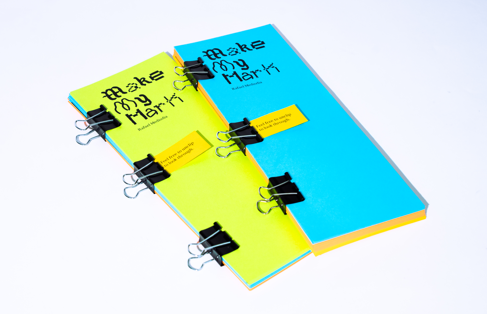
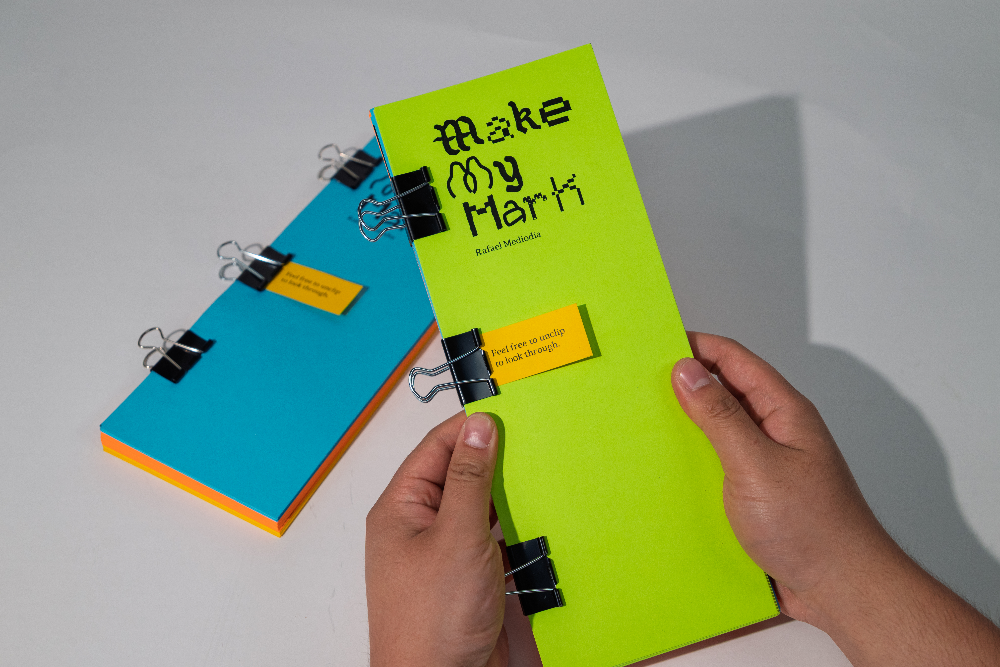
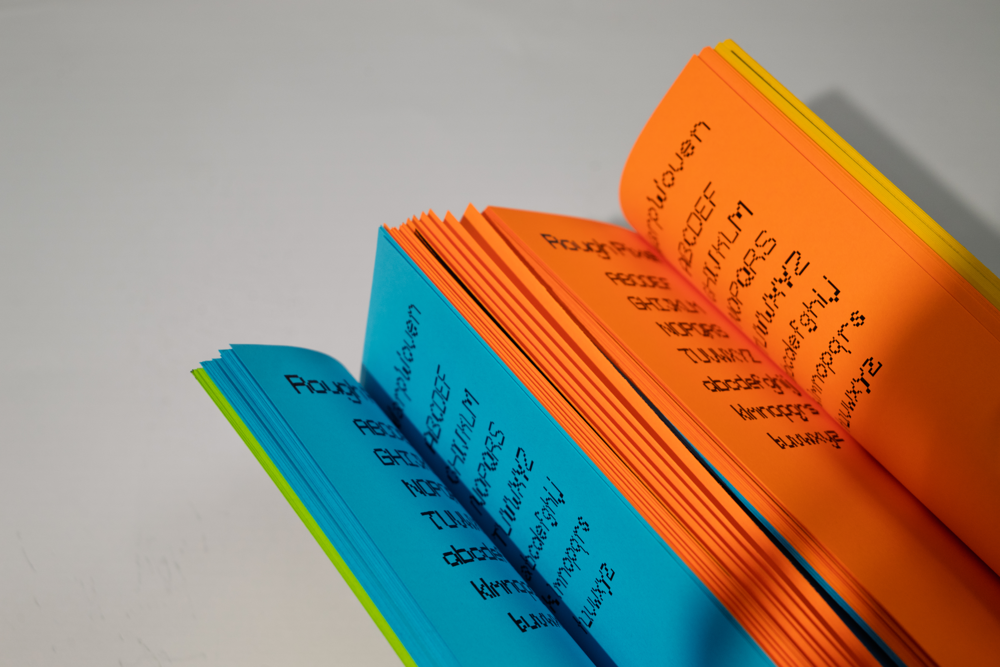

Typeset in Istorya, Clayletter, WarpWoven, Suburb, Pearface, Rough Pixel.
Make My Mark is my RISD Graphic Design degree project — a tall 4.25×11 in book where I gathered what I was inspired by, thinking through, and making along the way, all set in typefaces I drew myself. It's printed on Astrobrights color paper and held together with binder clips, so you can keep it bound or take it apart. That felt like the right way to hold a project that's still always growing. Read Words on Making My Mark.
Typeset in Istorya, Clayletter, WarpWoven, Suburb, Pearface, Rough Pixel.


